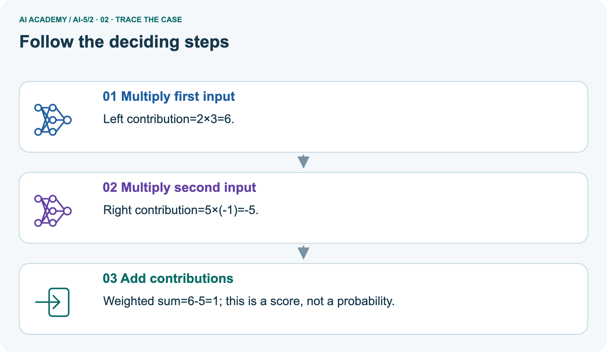
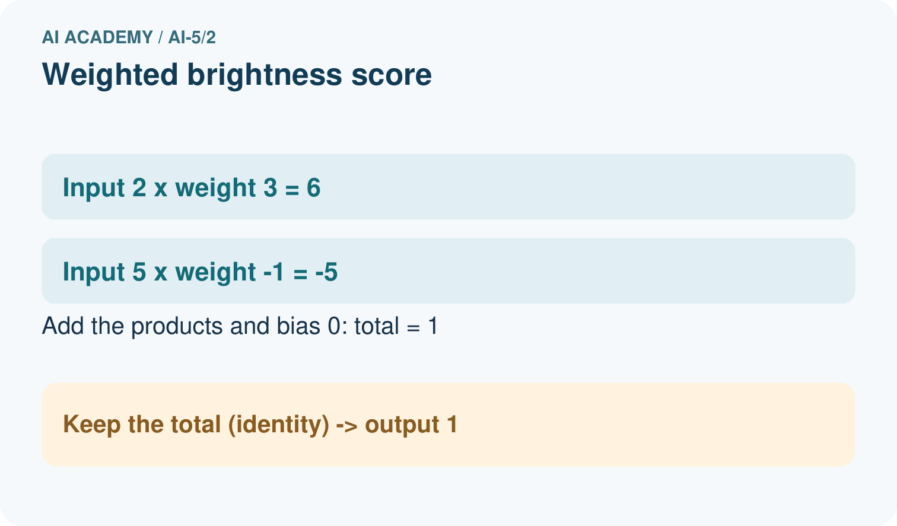
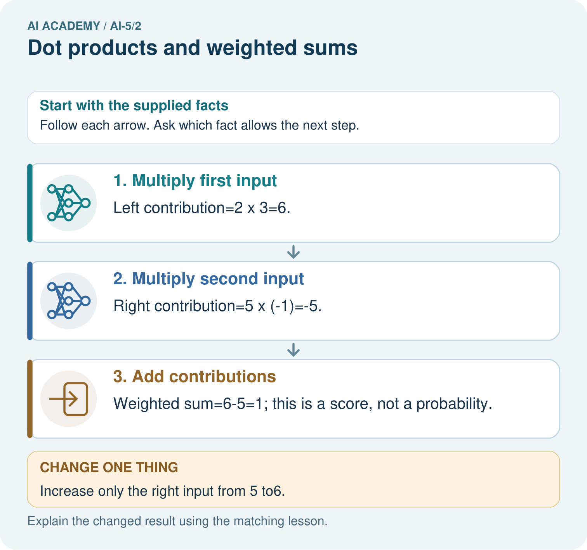
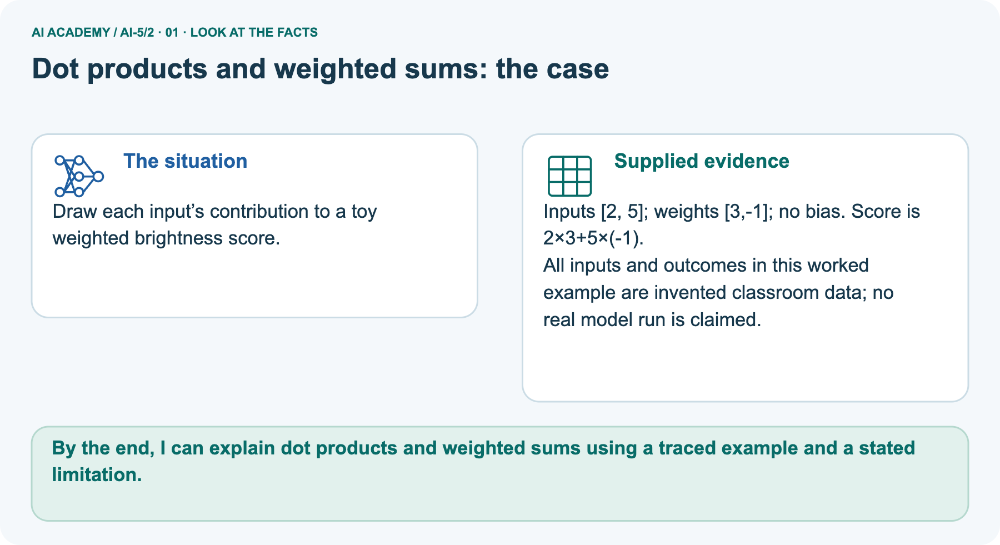
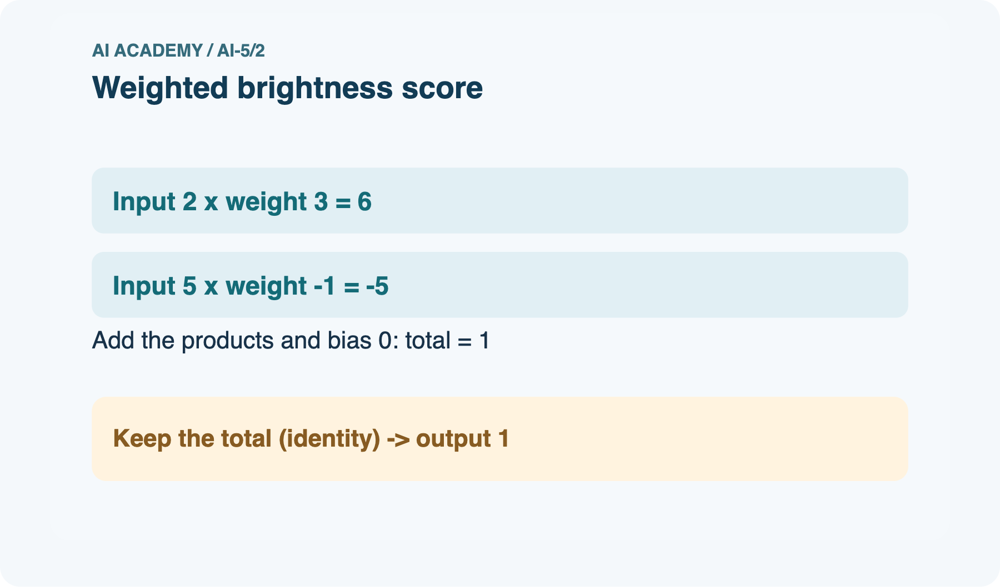
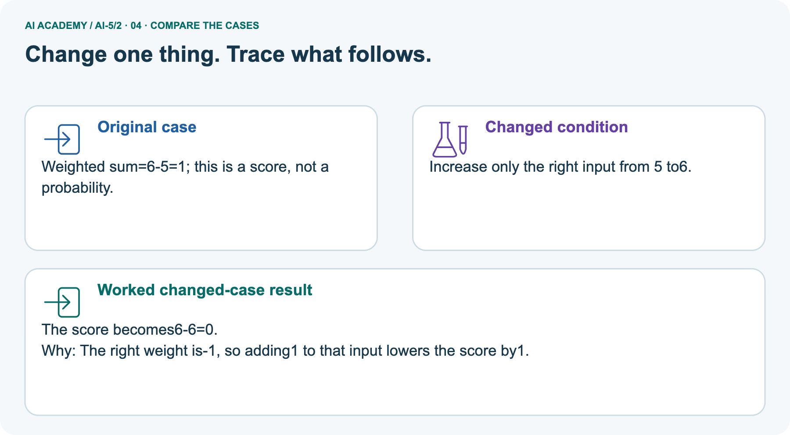
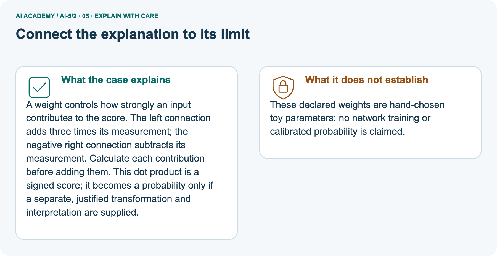

AI Academy · Level 5 · Grade 10 · Week 2 · Teacher guide
Dot products and weighted sums
Learn to understand, design, build, test and explain AI systems responsibly.
Project: Image-pattern Network Investigation
THE CONNECTED WEEK
Make every contribution visible.
Use complete matched-product traces and validated-input contracts;distinguish score arithmetic from learned or probabilistic claims.
Keep one habit: Assess signed products,total,controlled change and dimension guard with the checked independent key.
Main lesson · Section 1
Prepare the connected mathematical investigation
Keep explanation,shared practice and independent evidence distinct.
Target and main teaching plan
Primary target: Calculate a dot product by matching feature positions
| Session | Sequence and minutes | Resources |
|---|---|---|
| Session 1 · Understand · 45 min | 0–7: recall and prerequisite; 7–15: inspect the concrete case and predict; 15–30: teacher models the worked trace; 30–40: learners explain a step using the text and visual; 40–45: check the core idea. | Use Your mission, Notice the evidence, See how it works, Words that unlock the idea and Follow a worked example; record recall in the workbook. |
| Session 2 · Practise · 45 min | 0–5: retrieve the procedure; 5–15: W2 completion practice; 15–23: explain and check with a partner; 23–30: each learner answers the misconception check; 30–40: targeted reteaching or a harder variation; 40–45: prepare the investigation. | Use Find and repair a mistake, Practise together and Build your understanding; use the matching workbook W2 and Individual reasoning check. |
| Session 3 · Investigate and transfer · 45 min | 0–5: retrieve the decision rule; 5–20: investigate or trace; 20–30: start the independent case; 30–38: connect the project; 38–43: act on feedback; 43–45: plan the return check. | Use Run the investigation, Connect your project and Try a new case independently. Allow extra time for the full task set. When code is supplied, use the examples in See how it works or Follow a worked example and the browser lab in Supported practice, repair and portfolio. |
This is a starting allocation of 135 minutes, not a validated duration. Preserve all named topics. Schedule extra time for connected examples, the full investigation, independent cases and project building.
Repeated copies of a case share one recorded attempt; they are not new evidence.
Preparation and prerequisite
Printed lesson and workbook; paper and pencil
Calculator and optional local Python 3 editor; no packages or AI accounts needed
Use the fictional examples supplied; prepare the fresh retry before class
Their components assign different values to width and height. A calculation using different weights for those features can produce different results.
Opening retrieval
Without opening the old lesson, explain one key idea from Representing inputs as vectors. Give an example and a mistake that the idea helps you avoid.
Look for: Encode a record using a fixed feature order and units
Reference example, not the only acceptable wording: Teacher explanation: A [4, 2], B [2, 4], C [3, 3]. Each has dimension 2. The table has 3 rows and 2 columns.
Pictured end goal
By the end, I can explain dot products and weighted sums using a traced example and a stated limitation.
Earlier wording, alternatives and picture transcripts
Teach the learning cycle
Retrieval answer guidance
Representing inputs as vectors
Teach the dot product as a traceable sum of signed contributions in two 45-minute sessions. Keep weights fixed throughout each comparison and separate hand-chosen parameters from training.
Students should explain a score change using the corresponding coefficient, while retaining the limits of that interpretation.
Outcomes
Calculate a dot product by matching feature positions
Explain how a weight changes a score with other inputs fixed
Distinguish a weighted score from a probability or trained model
Preparation
Prerequisite answer
End goal for the pictorial case
This added worked case illustrates the week’s main idea. Retain all original and connected topics; schedule its practice within the teaching cycle.
Main lesson · Section 2
Teach matched products,compatible units and a bounded score
Keep the parcel and brightness coefficient sets explicit.
Main explanation,full trace and guided check
A small model can combine several measurements into one score. Let x = [4, 2] contain fictional width and height measurements in cm. Set weights w = [2, -1].
Multiply matching positions, then add: s = (2 times 4) + (-1 times 2) = 6. The letter x names the input vector.
We call this calculation a dot product, written w dot x. The vectors must have the same number of components. Each weight belongs to one named feature.
These hand-selected weights demonstrate a computation; no training has happened. The result 6 is a score, not a probability or a claim that this parcel is safe.
The coefficients carry score-per-cm units in this example, making both contributions compatible score units. A weighted sum needs a consistent definition of units.
Keep w = [2, -1] fixed. For A = [4, 2], the score is 6. For B = [2, 4], it is 4 - 4 = 0. For C = [3, 3], it is 6 - 3 = 3. Swapping input positions without swapping their matching weights changes the computation.
A zero score can come from cancellation, even when neither input is zero.
The length check matters: Python zip alone stops at the shorter list and could silently omit a feature. The function assumes numeric inputs already validated under the schema.
First predict the three printed values on paper, then compare.
| Parcel input [width_cm, height_cm] | Width contribution 2×width | Height contribution−1×height | Total score |
|---|---|---|---|
| A[4, 2] | 8 | -2 | 6 |
| B[2, 4] | 4 | -4 | 0 |
| C[3, 3] | 6 | -3 | 3 |
| Same-width changed height[4, 3] | 8 | -3 | 5 |
Multiply matching components then add
Guided: [4, 3] gives 8 and -3, total 5, down 1 from 6 because height rose by 1 with coefficient -1. Exit: the score has no supplied probability mapping, fitted probability model or calibration evidence.
Multiplying it by ten does not create a supported probability.
Separate pictured brightness facts
Draw each input’s contribution to a toy weighted brightness score.
Inputs [2, 5]; weights [3,-1]; no bias. Score is 2×3+5×(-1).
All inputs and outcomes in this worked example are invented classroom data; no real model run is claimed.
This brightness picture uses x=[2, 5], w=[3, −1], no bias:contributions 6 and−5, total 1. Increasing only the right input to6 changes that contribution to−6, total 0. The input still has nonzero measurements; the contributions cancel. Main parcel examples instead use w=[2, −1], so do not swap the two weight lists. A score can be negative, zero or positive; no probability interpretation or training is supplied.
Trace negative contribution and changed score



Read the picture one step at a time
A weight controls how strongly an input contributes to the score. The left connection adds three times its measurement; the negative right connection subtracts its measurement. Calculate each contribution before adding them.
This dot product is a signed score; it becomes a probability only if a separate, justified transformation and interpretation are supplied.
These declared weights are hand-chosen toy parameters; no network training or calibrated probability is claimed.
Change: Increase only the right input from 5 to6.
Prediction: The score becomes 6-6=0.
Reason: The right weight is-1, so adding 1 to that input lowers the score by1.
Earlier wording, alternatives and picture transcripts
| Term | Meaning |
|---|---|
| Weight | A numerical coefficient multiplying one input component |
| Dot product | The sum of products of corresponding vector components |
| Contribution | The product of one input component and its matching weight |
| Score | A numerical output whose interpretation must be specified |
Model the reasoning aloud
Use the complete worked example below before asking learners to complete W2. Reveal a small part, invite a prediction, then explain the deciding step.
These teacher notes contain solutions; do not reveal the independent case answer during modelling.
Multiply matching components then add
| Thinking move | Teacher prompt |
|---|---|
| Plan | What is given? What is the question? Which procedure fits these facts? |
| Do | Point to each input and intermediate step in the worked trace. Name the rule that allows the next step. |
| Check | Does the output answer the question? Which assumption or limitation prevents a larger claim? |
Use the diagram and verbal explanation together. Ask learners to match a sentence to a specific visual step; do not assign learners fixed visual or auditory learning styles.
A pictorial worked case: Dot products and weighted sums
The facts we will use






Why this result follows
What this example does not establish
Change one thing in the pictured case
Ask while showing the picture
Cover the result. Ask learners to name the inputs and predict the next step. Uncover one step, connect the icon to the actual procedure, and explain its evidence. Then change the supplied condition and compare.
The picture is a representation; it does not document execution of a real AI model.
Main lesson · Section 3
Model a step,then remove help
Collect each learner’s reasoning before showing a key.
Current completion task and checked reasoning
Completion task: For w = [2, -1] and x = [2, 4], explain why score zero does not mean the input contains no information.
Teacher check: Teacher explanation: Contributions 4 and -4 cancel. The input still contains width 2 and height 4; zero is the combined score.
Start by identifying the given inputs together. Leave the intermediate steps blank. If needed, model one step, then withdraw that help on the next step. Move to a full trace only when the partial trace is understood.
For partners, alternate explainer and checker; collect a response from every learner before discussion.
Individual misconception check
Use the worked case for Dot products and weighted sums. Proposed explanation: “Multiply the sums instead”. Decide whether this explanation is supported.
Point to the step or supplied fact that decides; explain your repair if needed.
Expected correction: The operation is 2 times 4 plus -1 times 2, not (2 - 1) times (4 + 2). That shortcut happens to match for some inputs but is not the rule.
Collect explanations, not only yes/no votes. If a misunderstanding is common, re-model the relevant step for the class.
If it affects a few learners, give a short targeted group explanation while others solve a more demanding variation.
Pictured reasoning and changed case
Which connection explains why more right brightness lowers this score? Point to the relevant step in the picture, then write the changed result and the rule or evidence that supports it.
The right connection has negative weight -1. Its contribution changes from -5 to-6 while the left contribution stays 6. Changed-case check: The score becomes 6-6=0.
The right weight is-1, so adding 1 to that input lowers the score by1.
Changed-case reasoning: The score becomes 6-6=0. The right weight is-1, so adding 1 to that input lowers the score by1.
Collect each learner’s explanation before discussion. Use the first missing connection between input, deciding step and result to choose support. This question is worked-case practice, not fresh mastery evidence.
Accessible support and extension
Use See how it works and Follow a worked example. Collect a prediction before revealing its result; ask the learner to point to each intermediate fact.
Provide three labelled contribution boxes and a number line for signed addition.
Extension: permute both inputs and matching weights together and show that the sum is preserved; then permute only one to expose a schema mismatch.
Earlier wording, alternatives and picture transcripts
| Time or stage | Teacher action |
|---|---|
| Session 1 start to 7 minutes | Ask the prerequisite question. Check signed multiplication with -1 times 2 before introducing a dot product. |
| 7 to 18 minutes | Lay out the contribution table. Students draw a connection between each named input and its own weight. |
| 18 to 32 minutes | Complete W1 and W2. Trace A, B and C with the same weights; discuss cancellation rather than calling zero an empty input. |
| 32 to 45 minutes | Run or trace the guarded Python function. Try a missing weight and explain the error. Complete the guided change. |
| Session 2 start to 8 minutes | Retrieve the two contributions for A. Ask what changes if height increases while width stays fixed. |
| 8 to 20 minutes | Complete W3, converting only height to mm. Show why weight magnitude depends on units. |
| 20 to 35 minutes | Collect W4 independently. Require the three signed contributions, original and changed totals, and the dimension error explanation. |
| 35 to 45 minutes | Complete W5 and the exit response. Use the fresh retry after targeted feedback; keep first attempts for assessment. |
Reduce help deliberately
Individual reasoning check
Pictorial practice question
Reasoned teacher answer
Main lesson · Section 4
Run the complete supplied investigation
Separate predictions,actual runs and paper traces.
Complete inputs,expected results and limits
Normal1, cancellation 0, zero coefficient 6, mismatched dimensionsValueError; missing input violates the numeric contract. Empty lists yield 0 arithmetically but are not the two-feature task. Unit-preserving repair weights[2, −.1], input[4, 20]score 6. Independent products−6, +4, +1 total−1; second input 1→2 total 3, change+4; three features require three weights. Do not equate score 6 with60%probability.
Diagnose the current misconceptions
Multiply the sums instead: The operation is 2 times 4 plus -1 times 2, not (2 - 1) times (4 + 2). That shortcut happens to match for some inputs but is not the rule.
Negative means unimportant: A negative coefficient changes direction. Units, data and the rest of the model affect interpretation.
The weights have been learned: These values were supplied. Training would require data, an objective and a fitting procedure.
Use Run the investigation for the evidence ledger. Add a boundary or missing-input case and record the expected response before checking. More successful repeats of one case do not establish wider coverage.
Choose accessible support
| What the response shows | Next teaching action |
|---|---|
| Missing or misread facts | Read the case aloud, mark supplied versus unknown facts, and let the learner restate it. |
| Wrong procedure | Return to the deciding step in the worked case. Contrast it with the proposed incorrect explanation. |
| Arithmetic or implementation error | Trace intermediate values or lines; preserve the first mismatch and retry that step. |
| Correct result without a reason | Ask for a trace and a changed case before marking independent understanding. |
| An unsupported wider claim | Ask which supplied evidence supports the claim and which further observation would be needed. |
Offer an oral explanation, drawing, enlarged visual or fewer examples when that removes a reading/writing barrier. Keep the same reasoning goal.
Stretch secure learners by changing a boundary or assumption and asking them to defend the effect, not simply by assigning more of the same questions.
Earlier wording, alternatives and picture transcripts
Match the support to the first error
Main lesson · Section 5
Assess the new schema or calculation transfer
Keep the selected answer private until after a first attempt.
Selected independent task and checked answer
Selected case: Use x = [3, 1, 2] and w = [-2, 4, 0.5]. Give each contribution and the total. Increase only the second component from 1 to 2 and compute the new total. Explain why a two-weight list is invalid for this input.
Teacher explanation: Contributions -6, 4, 1 give -1. With second component 2, contributions -6, 8, 1 give 3, a rise of 4.
Three input components need three matching weights; silently dropping the final component changes the computation.
Judge explanation,trace and limits
| Dimension | Evidence required |
|---|---|
| Explanation | Names the applicable idea or procedure and ties it to the supplied facts. |
| Trace and result | Preserves the given inputs and shows the relevant intermediate steps; distinguishes a prediction from an observed execution. |
| Limits | States the assumptions, missing evidence or conditions under which the result would change. |
Record each dimension as not yet, with support, or independent. Accept a valid alternative procedure with a defensible trace.
Do not penalise an honestly recorded model failure if the learner correctly explains its evidence and limits.
Give one usable repair
Name the earliest unsupported step and give one action to repair it. Have the learner make that repair now and explain why. Then assess the relevant skill on a fresh, fully specified case.
Confirm it was not previously practised with feedback; solve and check the new case before assigning it. A follow-up design prompt is a starting brief, not automatically an equivalent test.
W1 Calculate contributions
For w = [2, -1] and x = [3, 5], write both contributions and their sum.
Teacher explanation: Contributions are 6 and -5, so the score is 1.
W2 Explain cancellation
For w = [2, -1] and x = [2, 4], explain why score zero does not mean the input contains no information.
Teacher explanation: Contributions 4 and -4 cancel. The input still contains width 2 and height 4; zero is the combined score.
W3 Preserve a unit change
Width stays in cm and height changes to mm. For the worked parcel [4 cm, 20 mm], give the revised weights and score.
Teacher explanation: Use [2, -0.1]. Contributions 8 and -2 give score 6, preserving the original measurement meaning.
W5 Find lost information
Verify that [4, 2] and [5, 4] both score 6 with w = [2, -1]. Can a later step receiving only this score distinguish those two records?
Teacher explanation: The scores are 8 - 2 = 6 and 10 - 4 = 6. A deterministic later step receiving only 6 receives identical information and cannot distinguish them.
Earlier wording, alternatives and picture transcripts
Guided and exit questions
Guided: [4, 3] gives 8 and -3, total 5, down 1 from 6 because height rose by 1 with coefficient -1. Exit: the score has no supplied probability mapping, fitted probability model or calibration evidence.
Multiplying it by ten does not create a supported probability.
W1 Calculate contributions
W2 Explain cancellation
W3 Preserve a unit change
W4 Compute a new dot product independently
Use x = [3, 1, 2] and w = [-2, 4, 0.5]. Give each contribution and the total. Increase only the second component from 1 to 2 and compute the new total. Explain why a two-weight list is invalid for this input.
Teacher explanation: Contributions -6, 4, 1 give -1. With second component 2, contributions -6, 8, 1 give 3, a rise of 4.
Three input components need three matching weights; silently dropping the final component changes the computation.
W5 Find lost information
Independent assessment and fresh retry
W4 requires contributions -6, 4, 1 and total -1, changed total 3 and a dimension check. Fresh retry: w = [1, -3, 2], x = [2, 1, 4] gives 2 - 3 + 8 = 7. If only the third input falls to 3, the score is 5.
Ask for the two-point decrease explanation.
Assess independent transfer
Selected case answer
Feedback that the learner uses
Main lesson · Section 6
Connect,support and revisit the mathematics
Use the saved evidence to choose the next step.
Project and next-week bridge
Add a labelled dot products and weighted sums evidence sheet to Image-pattern Network Investigation. Show how you can calculate a dot product by matching feature positions.
Use the supplied fictional case and keep its inputs, intermediate steps, calculation or prediction, and limitation. Connect this record to last week’s record; a matching answer without a trace is insufficient.
Provide three labelled contribution boxes and a number line for signed addition.
Extension: permute both inputs and matching weights together and show that the sum is preserved; then permute only one to expose a schema mismatch.
Week 3 adds a bias after the dot product and uses an explicit decision boundary.
Retain the project ledger and assess a changed case after support. Check the relevant prerequisite before carrying this component forward.
For your Image-pattern Network Investigation, save the input, procedure, observed result and limitation of this check.
Label this worked example as practice; use a different, previously unreviewed case when checking independent understanding.
Delayed return and support record
Suggested return points in this level: ai-5/3, ai-5/5, ai-5/8. Use actual classroom dates, adjusting for holidays and gaps. One, three and six teaching weeks are scheduling choices, not a claimed optimal spacing.
At a delayed check, ask for the idea from memory and a changed application. Compare with the earlier independent response and record support used.
For a new level, revisit the previous capstone before checking the new prerequisites.
| Record | Teacher evidence |
|---|---|
| Learner code and date | |
| Concept and case used; prior exposure | |
| Explanation / trace / limits | |
| Support and first repair | |
| Changed case and delayed outcome | |
| Next teaching action |
Use the evidence to choose reteaching or the next step. A completed page, confidence rating or attractive project does not by itself demonstrate understanding.
Earlier wording, alternatives and picture transcripts
Plan the delayed return
Project evidence from this case
Reference bank and extra practice
Choose the reference that helps your next step.
Reference · Alternative planning checklist
Reference · Section 7
Reference · Alternative planning checklist
Use alongside the main route when helpful.
Planning,assessment and project reminders
Teaching target: Calculate a dot product by matching feature positions
Prepare the labelled worked-case picture, the matching workbook, fictional input cards and a place for individual responses. Check a local Python 3 environment before class; have a paper-trace version ready.
| Session | Plan | Resources |
|---|---|---|
| Session 1 · Understand · 45 min | 0–7: recall and prerequisite; 7–15: inspect the concrete case and predict; 15–30: teacher models the worked trace; 30–40: learners explain a step using the text and visual; 40–45: check the core idea. | Use Your mission, Notice the evidence, See how it works, Words that unlock the idea and Follow a worked example; record recall in the workbook. |
| Session 2 · Practise · 45 min | 0–5: retrieve the procedure; 5–15: W2 completion practice; 15–23: explain and check with a partner; 23–30: each learner answers the misconception check; 30–40: targeted reteaching or a harder variation; 40–45: prepare the investigation. | Use Find and repair a mistake, Practise together and Build your understanding; use the matching workbook W2 and Individual reasoning check. |
| Session 3 · Investigate and transfer · 45 min | 0–5: retrieve the decision rule; 5–20: investigate or trace; 20–30: start the independent case; 30–38: connect the project; 38–43: act on feedback; 43–45: plan the return check. | Use Run the investigation, Connect your project and Try a new case independently. Allow extra time for the full task set. When code is supplied, use the examples in See how it works or Follow a worked example and the browser lab in Supported practice, repair and portfolio. |
Before class, solve the supported practice: For w = [2, -1] and x = [2, 4], explain why score zero does not mean the input contains no information.
Reasoned practice answer: Teacher explanation: Contributions 4 and -4 cancel. The input still contains width 2 and height 4; zero is the combined score.
Check every learner before discussion: Use the worked case for Dot products and weighted sums. Proposed explanation: “Multiply the sums instead”. Decide whether this explanation is supported.
Point to the step or supplied fact that decides; explain your repair if needed.
Misconception repair: The operation is 2 times 4 plus -1 times 2, not (2 - 1) times (4 + 2). That shortcut happens to match for some inputs but is not the rule.
Support: read the exact case aloud, enlarge the labelled picture, supply input cards and model only the first deciding step. Accept a spoken explanation or drawing; retain the reasoning goal.
Extension: Increase only the right input from 5 to6. Require a prediction and a reason before comparing. Expected result: The score becomes 6-6=0. Reason: The right weight is-1, so adding 1 to that input lowers the score by1.
Independent assessment: withhold the reserved answer until the learner has attempted the new case. Record support separately from correctness.
| Criterion | Not yet | With support | Independent |
|---|---|---|---|
| Explanation | Names an answer without a deciding fact | Uses a hint to link fact and decision | Explains the deciding fact in own words |
| Trace or test | Cannot connect input and result | Completes steps with prompts | Traces or tests a changed case accurately |
| Limits and revision | Claims more than evidence supports | Names a limit after a prompt | States a defensible limit and useful next test |
Project checkpoint: Frame the need. Name the user, the problem, allowed inputs and a safe simple starting method.
Use the weekly teacher answer for topic-specific reasoning. A saved progress tick is an activity record; judge mastery from the learner’s explanation and evidence.
Reference · Feedback,labs and repair paths
Reference · Section 8
Reference · Feedback,labs and repair paths
Retain the first attempt and the evidence used for a repair.
Feedback and record guidance
Use the two formative questions as supported practice, not as independent mastery scores. Discuss the deciding evidence rather than accepting a guessed selection.
The feedback comes from the reviewed public worked case. Do not reveal the separately reserved independent teacher answer until the learner has attempted that case.
Ask students to predict before running code. Preserve errors and actual outputs; collect a changed test and an explanation. The branch-boundary and indexing lessons deliberately include failure cases.
Use the earlier worked-explanation links to address a specific missing building block, then return to the current question. Adapt this suggestion after observing the learner; it is not an automatic diagnosis.
Collect the completed-work portfolio as evidence. Record support separately from correctness, and assess explanation, trace/test and limitations. Progress ticks and quiz selections alone do not establish mastery.
Reference · Teach with the six pictures
Reference · Section 9
Reference · Teach with the six pictures
Choose one picture for a particular reasoning move.
01. Dot products and weighted sums: the case



Draw each input’s contribution to a toy weighted brightness score. Supplied facts: Inputs [2, 5]; weights [3,-1]; no bias. Score is 2×3+5×(-1).
All inputs and outcomes in this worked example are invented classroom data; no real model run is claimed.
Point to the given fact that matters most. Explain why it matters.
Teacher prompt: Point to the given fact that matters most. Explain why it matters. Ask learners to describe one label or arrow in ordinary words. Use the adjacent transcript if the image is difficult to see.
02. Follow the deciding steps
Multiply first input: Left contribution=2×3=6. → Multiply second input: Right contribution=5×(-1)=-5. → Add contributions: Weighted sum=6-5=1; this is a score, not a probability.
Point to each numbered stage and explain which recorded input it uses.
Teacher prompt: Point to each numbered stage and explain which recorded input it uses. Ask learners to describe one label or arrow in ordinary words. Use the adjacent transcript if the image is difficult to see.
03. Weighted brightness score



Weighted brightness score. Inputs: [2, 5]; weights: [3, -1]; bias: 0; activation: identity; output: 1.
Read the labels and values. Explain the relationship the model shows.
Teacher prompt: Read the labels and values. Explain the relationship the model shows. Ask learners to describe one label or arrow in ordinary words. Use the adjacent transcript if the image is difficult to see.
Check row/column meanings, units and denominators before discussing a difference. Supplied toy values are not real class or model results.
04. Change one thing. Trace what follows.



Original case: Weighted sum=6-5=1; this is a score, not a probability. Changed condition: Increase only the right input from 5 to6. Expected result: The score becomes 6-6=0.
Reason: The right weight is-1, so adding 1 to that input lowers the score by1.
Predict before checking the worked changed-case result. Name what changed and what the supplied facts allow you to conclude.
Teacher prompt: Predict before checking the worked changed-case result. Name what changed and what the supplied facts allow you to conclude. Ask learners to describe one label or arrow in ordinary words.
Use the adjacent transcript if the image is difficult to see. Changed-case reasoning: The right weight is-1, so adding 1 to that input lowers the score by1.
05. Connect the explanation to its limit



A weight controls how strongly an input contributes to the score. The left connection adds three times its measurement; the negative right connection subtracts its measurement. Calculate each contribution before adding them.
This dot product is a signed score; it becomes a probability only if a separate, justified transformation and interpretation are supplied.
Limit: These declared weights are hand-chosen toy parameters; no network training or calibrated probability is claimed.
Explain the case, then point to a limit on the claim.
Teacher prompt: Explain the case, then point to a limit on the claim. Ask learners to describe one label or arrow in ordinary words. Use the adjacent transcript if the image is difficult to see.
Keep the stated scope: These declared weights are hand-chosen toy parameters; no network training or calibrated probability is claimed.
06. Make the idea visible in your project


For your Image-pattern Network Investigation, save the input, procedure, observed result and limitation of this check.
Label this worked example as practice; use a different, previously unreviewed case when checking independent understanding. Draw your input, deciding step, result and limit.
Supported question: Which connection explains why more right brightness lowers this score? Point to the relevant step in the picture, then write the changed result and the rule or evidence that supports it.
Draw your project trace and justify the deciding step using evidence.
Teacher prompt: Draw your project trace and justify the deciding step using evidence. Ask learners to describe one label or arrow in ordinary words. Use the adjacent transcript if the image is difficult to see.
Supported practice key: The right connection has negative weight -1. Its contribution changes from -5 to-6 while the left contribution stays 6. Changed-case check: The score becomes 6-6=0.
The right weight is-1, so adding 1 to that input lowers the score by1.
Earlier wording, alternatives and picture transcripts
Use one picture at a time. Hide a worked result before asking for a prediction, then reveal it for feedback. These are supported teaching cases; retain the separate independent assessment for a fresh first attempt.